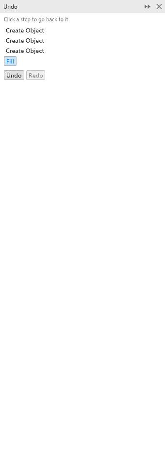

復原、縮放和平移
您可以復原任何變更，並以任何縮放比例、從任何位置檢視您的繪圖。縮放和平移永遠不會變更繪圖。
復原和重做
- 編輯 > 復原（Ctrl+Z）會取消上一個變更；重做（Ctrl+Shift+Z）會再次執行它。
- 標準工具列上「復原」和「重做」旁邊的箭頭會列出各個步驟。選擇一個步驟，即可復原或重做到該步驟為止的所有變更。
- 重複 會再次套用上一個指令，例如套用到您選取的下一個物件。
復原面板
復原 面板會列出繪圖的每個變更，最舊的在最前面。按一下某個步驟，可讓繪圖回到該步驟之後的狀態；按一下較後面的步驟則可再次前進。從 視窗 > 面板 開啟它。

縮放
- 轉動滑鼠滾輪，即可以指標為中心放大或縮小。
- 使用標準工具列上的縮放方塊：輸入比例，或從其清單中選擇（10% 到 1600%），或縮放至選取範圍、所有物件、頁面、頁面寬度或頁面高度。
- 檢視 > 放大 和 縮小 會縮放一級；縮放至符合視窗（F4）會顯示所有物件，縮放至頁面（Shift+F4）顯示頁面，縮放至選取範圍（Shift+F2）顯示選取範圍。
- 在觸控板上以雙指捏合可縮放；在觸控螢幕上，無論使用哪個工具，都可以用兩指平移和捏合。
縮放工具
選擇 縮放 工具（Z 或 F2），然後：
- 按一下可在該點放大兩倍；
- Shift+按一下或按一下右鍵可縮小兩倍；
- 拖曳出一個矩形，可縮放至該矩形填滿視窗。
按兩下工具的按鈕，可縮放至符合所有物件。
平移
- 使用任何工具時，按住滑鼠中鍵並拖曳。
- 選擇 平移 工具（H）並拖曳。
- Ctrl+滾輪可上下捲動，Alt+滾輪可左右捲動。
- 使用捲軸，其範圍涵蓋頁面及其周圍一個頁面大小的區域。
- 按住捲軸之間角落的「導覽器」按鈕，並將指標移到頁面縮圖上。
- PgUp 和 PgDn 可前往上一頁和下一頁。
若要讓滾輪捲動而不是縮放，請在 工具 > 選項 > 工具 的 縮放/平移 頁面上變更滑鼠滾輪動作。之後滾輪會捲動，Shift+滾輪會左右捲動，Ctrl+滾輪則會縮放。請參閱工具選項。
檢視
檢視 選單用來選擇物件的繪製方式：線框 只顯示外框，一般 和 增強 會繪製填色和效果，像素 則會以匯出時的像素顯示繪圖。全螢幕預覽 會在螢幕上單獨顯示頁面；按任意鍵即可返回。僅預覽選取的物件 會將該預覽限制為選取範圍。檢視 選單也可以顯示或隱藏尺規、格點、參考線、出血和可列印區域；請參閱尺規、格點和參考線。